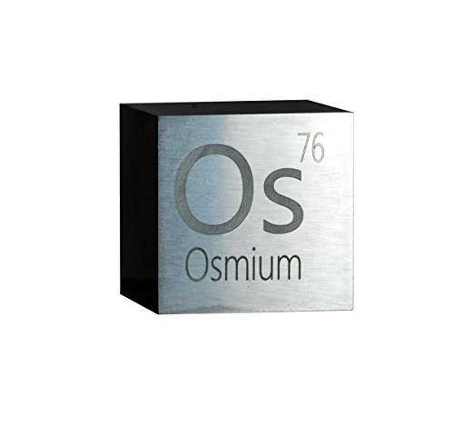
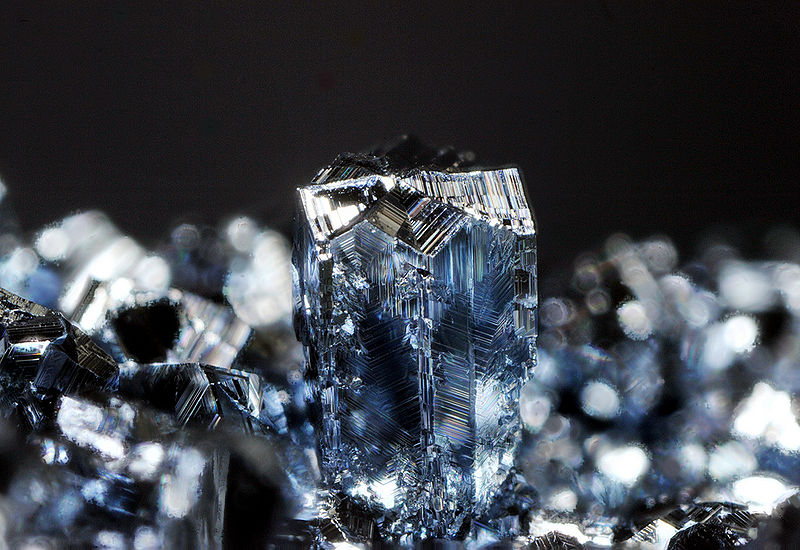

Осмий
Осмий (лат. osmium) — химический элемент с атомным номером 76 в периодической системе химических элементов Д. И. Менделеева, обозначают символом Os. При стандартных условиях представляет собой блестящий серебристо-белый с голубоватым отливом металл. Переходный металл, относится к платиновым металлам. Наряду с иридием обладает наибольшей плотностью среди всех простых веществ. Согласно теоретическим расчётам, его плотность даже выше, чем у иридия.

Элемент открыт в 1803 г. английским химиком С. Теннантом, который совместно с У. Волластоном разделил минерал осмирид, входящий в состав платиновой руды. Название происходит от греч. οσμη – запах (по резко пахнущему тетраоксиду OsO4).
Содержание осмия в земной коре 5·10–6 % по массе (относится к редким и рассеянным элементам). Встречается вместе с другими платиновыми металлами в медно-никелевых и медно-молибденовых рудах. Образует редкие минералы в виде сплавов с Ir (невьянскит с преобладанием Ir и сысертскит с преобладанием Os), сульфидов и арсенидов. Изотоп 187Os накапливается в месторождениях Re.

Осмий выделяют путём переработки концентрата платиновых металлов, получаемого из шламов электролитического рафинирования Cu и Ni. Концентрат прокаливают на воздухе или остатки от выщелачивания концентрата азотной кислотой спекают с BaO2, возгон поглощают раствором NaOH, осаждают OsO2(NH4)4Cl2 или K2[OsO2(OH)4], которые разлагают до порошкообразного или губчатого осмия в восстановительной среде.